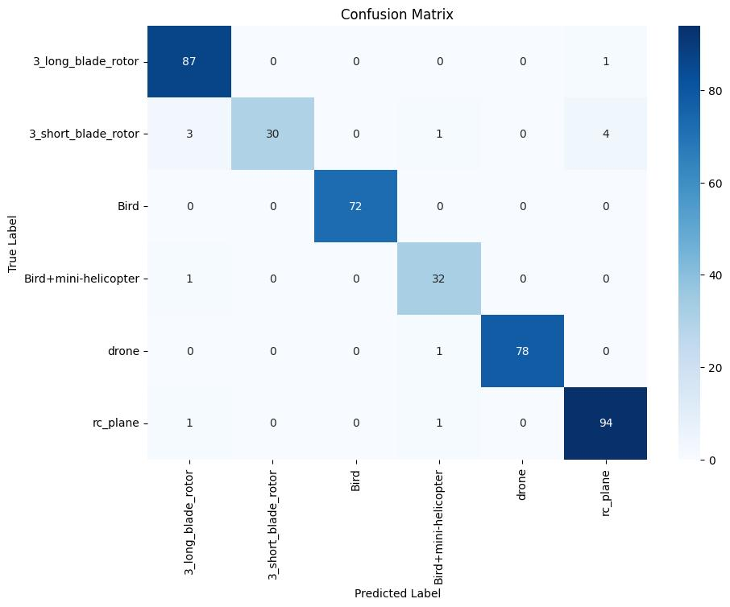
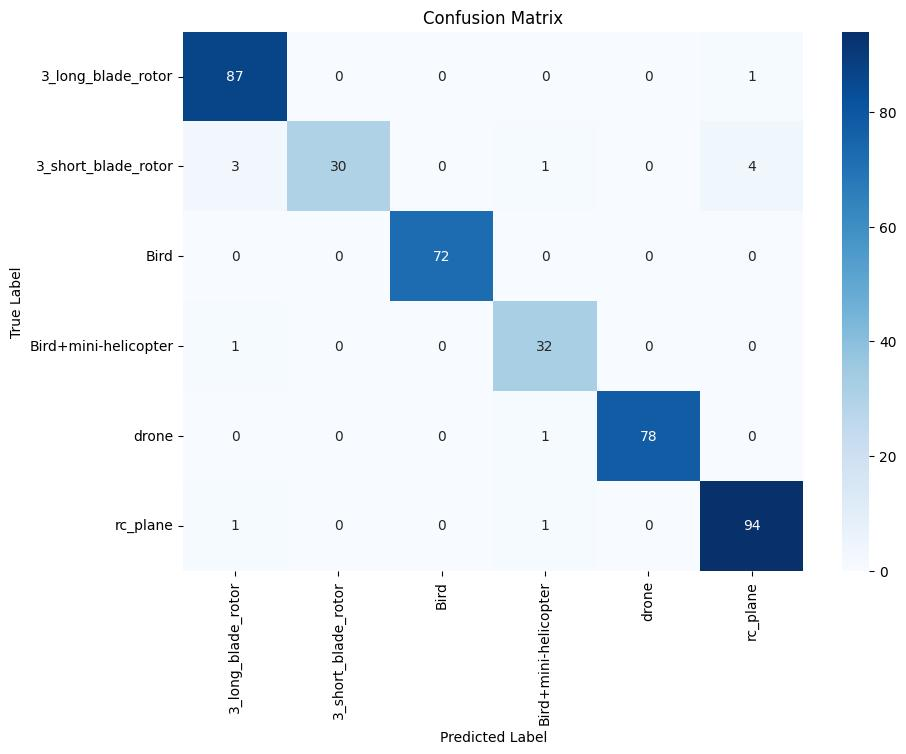

Project Overview
DroneGuard: AI-Powered Drone Detection System
Welcome to DroneGuard, our cutting-edge solution for distinguishing between drones and birds using micro-Doppler signature analysis. Developed for the [Hackathon Name], our project addresses the growing need for accurate and efficient drone detection in various security and airspace management scenarios.
The Challenge
With the increasing prevalence of drones in our skies, distinguishing them from birds has become a critical challenge for security personnel, air traffic controllers, and wildlife conservationists. Traditional methods often fall short, leading to false alarms or missed detections.
Our Innovative Solution
DroneGuard leverages advanced machine learning techniques to analyze micro-Doppler signatures, providing a reliable method to differentiate between drones and birds. Our solution offers:
- High accuracy classification using Tiny VGG architecture
- Efficient processing suitable for edge computing devices
- User-friendly web interface for easy deployment and use
- Real-time analysis capabilities for immediate threat assessment
Key Features
- Tiny VGG architecture for efficient classification
- PyTorch-based model for robust performance
- Streamlit web application for intuitive user interaction
- Optimized for balance between accuracy and computational efficiency
- Adaptable to various security scenarios
Impact and Benefits
- Enhanced public safety in crowded areas and events
- Improved airspace management and bird strike prevention
- Support for wildlife conservation efforts
- Cost reduction in security operations
- Advancement in AI applications for radar data analysis
Future Enhancements
We're committed to continually improving DroneGuard. Our roadmap includes:
- Integration with live radar systems for real-time classification
- Expansion of the model to classify different drone types
- Development of a mobile app for on-the-go threat assessment
Output Screenshots
 
